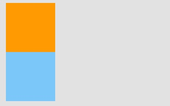
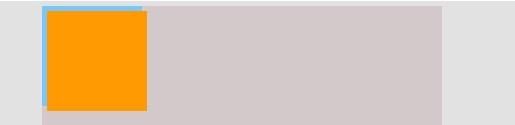
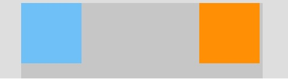

Let's Explore Together
In the beginning there are 2 retangular boxes and they are good!
Let's define some HTML structure. If we create 2 retangular boxes, and made them 100px for both height and weight.
Let one of them be position:static with background color lightskyblue, and the other retangular with background color orange but without declare any position.
The orange box will appear on top of the lightskyblue box, just like shown in the picture 1.

Position:Relative
However, if we give the orange box with position:relative, and 100px from top relative to its old position and 100px from left.
Now we can move the element. The orange box is now moved 100px to bottom & right, relative to its normal position.

Position:Absolute
In position:relative, the element is positioned relative to itself. However, an absolute positioned element is relative to its parent.
If you put both of them in a container, div class="container", and both boxes are position:absolute, you will only see one box on top of the other.

Now, move the orange box 5px to the left and 5 px to the top; you will see start to see a bit of lightskyblue box at the bottom.

Since the absolute positioned element are relative to its parent, if you put the container as position:relative and move the orange box right:5px,
5px relative to the most-right of parent. The result will show that lightskyblue box on the top left corner of corner of the container, and the orange box
will be 5px away from the top right position of container.

Position:Fixed
Like position:absolute, fixed positioned elements are also remove from the normal document flow. The real differences are only 2: